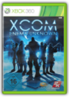

Grand Theft Auto IV
Rockstar Games
B000FRU1UM
Gears of War 2
Microsoft
B000ZK9QD2
The gears of war continue to turn as Marcus Fenix and his squad of Cogs go back into action. Gears of War 2 continues the story of Marcus Fenix and Delta Squad, locked in an increasingly desperate battle against the nightmarish Locust Horde for the survival of humanity. It is an epic saga of survival, loss, and retribution. Gears of War 2 raises the bar with the amazing technological advances of Unreal Engine 3, delivering a bigger, badder, and more intense experience.Party system and skill-based online matchmaking - form a full or partial team with friends and continue together from match to match without the need to reform after each game. A skill-based online matchmaking system groups players of similar skill level together in competitive multiplayer matches
Star Wars: The Force Unleashed
Lucas Arts Entertainment
B000R0URCE
The Star Wars saga will continue in Star Wars: The Force Unleashed, a videogame developed by LucasArts, which casts players as Darth Vader's "Secret Apprentice" and promises to unveil new revelations about the Star Wars galaxy. The expansive story, created under direction from George Lucas, is set during the largely unexplored era between Star Wars: Episode III Revenge of the Sith and Star Wars: Episode IV A New Hope. In it, players will assist the iconic villain in his quest to rid the universe of Jedi - and face decisions that could change the course of their destiny.Join the Dark Side
You are Darth Vader's Secret Apprentice
View larger.
Use The Force to disable your enemies
View larger.
Artwork of the Jedi "Maris"
View larger. As its name implies, The Force Unleashed completely re-imagines the scope and scale of the Force by taking full advantage of newly developed technologies that will be seen and experienced for the first time: Digital Molecular Matter (DMM), by Pixelux Entertainment, and euphoria by NaturalMotion Ltd. Paired with the powerful Havok Physics™ system, these new technologies create gameplay only possible on the new generation of consoles. DMM incorporates the physical properties of anything in the environment so that everything reacts exactly like it should - wood breaks like wood, glass shatters like glass, plants on the planet Felucia bend like plants on the planet Felucia would, and more. Meanwhile, as a revolutionary behavioral-simulation engine, euphoria enables interactive characters to move, act and even think like actual human beings, adapting their behavior on the fly and resulting in a different payoff every single time.
Game Features:During the period between Episodes III and IV, players hunt Jedi in the role of Darth Vader's Secret Apprentice.Unleash and upgrade the Secret Apprentice's four core Force powers - Force push, grip, repulse and lightning - throughout the course of the game, and combine them for ultra-destructive, never-before-seen combos.Examples of unleashing the Force in ways never thought possible:The Secret Apprentice won't just Force push enemies into walls - he'll Force push enemies through walls.The Secret Apprentice won't just Force grip foes to throw them aside - he'll Force grip them in midair, zap them with lightning, then drop them to the ground to explode like a bomb.In addition to new adversaries created just for the game, such as fugitive Jedi and Force-sensitive Felucians, players will also confront and associate with familiar faces from the Star Wars films, including Darth Vader.Visit locations such as Episode III's Wookiee homeworld Kashyyyk and the floral Felucia, the junk planet Raxus Prime, plus an Imperial TIE fighter construction facility.The Force Unleashed is LucasArts' first internally developed title for next-generation consoles, and it represents the first in-game collaboration of talents and technology between LucasArts and Industrial Light & Magic, two companies now finally under one roof at the new Letterman Digital Arts Center in San Francisco's Presidio district.The Force Unleashed debuts Digital Molecular Matter from Pixelux and euphoria behavioral simulation from NaturalMotion Ltd.LucasArts is preparing an unprecedented promotional effort around the launch of The Force Unleashed, encompassing a full line of toys and game-based action figures from Hasbro, as well as a full publishing program from Dark Horse, Del Rey and Palace Press.
Meet the Cast
The Star Wars Saga will continue in 2008 with LucasArts' biggest-ever video game event. Set during the "dark times" between Episodes III and IV, Star Wars: The Force Unleashed portrays the previously untold story of Darth Vader's Secret Apprentice — and now you can put a face to that mysterious character as well as the major supporting cast members as LucasArts unveils the actors set to star in The Force Unleashed.
The New Technology of The Force Unleashed
With The Force Unleashed, LucasArts not only introduces a new chapter in the Star Wars saga, but also two completely new and innovative technologies — Digital Molecular Matter by Pixelux Entertainment and euphoria by NaturalMotion Ltd. These groundbreaking technologies combine with Havoc physics to create true next-gen gameplay and the Force like it's never been seen or experienced before.
Assassin's Creed
UBI Soft
B000P46NMK
Jerusalem, 1191 AD - The Third Crusade is tearing the Holy Land apart. You are an elite Assassin sent to stop the hostilities by suppressing the powers on both the Crusader and Saracen sides. But as you carry out your missions, a conspiracy begins to unfold. You find yourself tangled up in a conflict that threatens not only the Holy Land, but the entire world. Experience the power of a feared Assassin. Your actions can throw your immediate environment into chaos, and your existence will shape the events of this pivotal moment in history. ESRB Rated M for Mature
Lego Indiana Jones: The Original Adventures
LucasArts Entertainment
B0010YOQJQ
Lego Indiana Jones X360
LEGO Batman
Warner Bros
B000ZKBJY6
Holy Batman! All the villains from Arkham Asylum have escaped and it's up to Batman and Robin to stop them. Play as Batman and his sidekick Robin as you build, drive, swing and fight your way through Gotham City. Then, jump into the story from the other side and play as Batman's foes. There is no rest for the good (or evil).Play through the game in Story Mode from both the hero and villain sides Replay any level in Freeplay Mode with any characters you've unlocked. Access previously hidden areas to find additional rewards and bonus content Collect LEGO studs and special LEGO bricks throughout the game to unlock tons of extra content including special power-ups and bonus levels
Sonic's Ultimate Genesis Collection
Sega Of America, Inc.
B001G3AZS2
Take a trip back in time with over 40 titles from the SEGA Genesis era, including Sonic The Hedgehog favorites, for an unbelievable price! In classic single-player and multiplayer battles, you'll take down a huge variety of enemies, including Sonic's nemesis Dr. Eggman (AKA Dr. Robotnik), shuriken-flinging ninjas, hordes of altered beasts and the world's greatest fighting champions.
Sonic Unleashed
Sega Of America, Inc.
B0017HPE7E
Transformed and unleashed, Sonic races to save the world...and himself. Sonic the Hedgehog is on an adventure unlike any other. Powered by an all-new engine, Sonic Unleashed blends classic Sonic gameplay with a variety of in-game perspectives to create an entirely new and unique gaming experience. Merging blistering 2D action with meticulously rendered 3D environments, players race through intriguing locations across the globe as Sonic to save a chaotic world.The other side of Sonic
Sonic and his alter ego Werehog.
View larger.
Collect rings for Ring Energy.
View larger.
Swing into action with Werehog.
View larger. A New Sonic a New Story
On a quest for world domination Sonic nemesis Dr. Eggman has managed to steal the chaos emeralds once again and this time drained them of their power. As a result not only has the Earth split into distinct sections, so has Sonic. Now he is two beings. During the day he is the usual speed-addicted hedgehog players will remember, but at night he becomes Sonic the Werehog. In either form it is the player's ultimate goal to find the missing chaos emeralds and return them to their proper place in order to set the world and Sonic himself, back the way he should be.
Gameplay: The Two Sides of Sonic
Like nearly all Sonic games, Sonic Unleashed is platform-based. The game combines the feel of 2D side-scrolling that fans of the Sonic series love, with sharp 3D graphics, and throws in an over the back third-person perspective reminiscent of FPS gameplay for good measure. And just as in earlier games, as players race through and explore the expansive world before them, using auto lock to hone in on enemies and areas of interest, they will rely on the power they gain from the rings they collect for a variety of things, but with the new twist of Sonic's split personality, things are a little bit different.
Playing during the day, as you race across the world in the form of Sonic, speed is the main goal. Collecting rings fills you with 'Ring Energy,' which not only provides extra life, but also the advantage of 'Sonic Boost.' With this players can travel at speeds that approximate 300 MPH. In addition, Sonic Unleashed introduces two new features: the 'Speed Drift' and the 'Quick Step'. Speed Drifting is similar to drifting in racing games, allowing players to slide around corners at high speeds, while Quick Stepping is a sidestepping maneuver allowing Sonic to avoid enemies with quick steps to either side. Both keep you moving as fast as possible, so you can get as many rings as possible, which again keeps you moving as fast as possible.
As night falls and Sonic assumes his Werehog form the rings provide a different kind of power more suited to his more menacing appearance. Much slower, but also much more powerful, the Werehog relies on the rings to provide life as well as strength to shield himself from the attacks of enemies. This is necessary because Werehog gameplay, although based in platforming, incorporates significant levels of combat as well. Red orbs gathered as enemies are defeated allow the player to unlock additional combo moves that will supplement the hack and slash and arm stretching abilities that the Werehog always possesses. Whether Hedgehog or Werehog, no matter which form players prefer they will get ample opportunity to explore the two sides of Sonic since each area in the game contains both night and day segments where each form must be played.
Key Game Features:Sonic’s World Transformed - Sonic maintains his high-speed abilities during the day, but at night he is transformed into a mysterious dark form with incredible never-before-seen abilities including 3D-action brawling and amazing agility.Tight Navigation and Speed Control - Players accelerate to super speed with ‘Sonic Boost’ by collecting rings to increase Sonic’s ‘Ring Energy.’ Using ‘Quick Step,’ players will quickly move left or right to avoid obstacles instantly. Additionally, ‘Speed Drift’ allows players to rocket through turns without slowing down.Powerful New Engine and Cinematic Graphics - With its new proprietary “Hedgehog Engine,” Sonic Unleashed enhances the classic 2D perspective with mind-blowing 3D stages. Other next-gen technology capabilities include global illumination, grid computing, continuous data streaming and an intricate path finding system.Enhanced and Expanded Environments - Many unique and fascinating continents offer the player an opportunity to save the world in a dynamic, high-speed experience. In addition to exploring exciting unlockable areas, players dash through up to nine locations resembling real-life destinations including the Great Wall of China, Arctic Pole glaciers and many more.Whether it's the updated graphics that retain the side-scrolling feel of classic games in the Sonic franchise, an expansive world to race through and explore or the multiple and new ways to play, Sonic Unleashed offers something for players of any age or level of ability.
Lost: Via Domus
UBI Soft
B000VNS9D6
As a passenger of Oceanic flight 815, you survived the crash and find yourself on an uncharted island somewhere in the Pacific Ocean. As you begin to unravel mysteries of the island, you begin to discover secrets of your own. You will have to understand your past mistakes in order to survive and find your way homeYou and other survivors are marooned on this mysterious island - lost from civilization. But there's more to the island than meets the eye. It is a civilization onto itself with an ominous history and present. From invisible creatures and forces, you are not alone. Is it possible that the crash was not an accident? Each character must discover a path, a very special path, where the core of energy meets the individual. Through adventures against hidden mysteries, you need to find answers that may help you find the way home.
Lego Star Wars: The Complete Saga
Lucas Arts Entertainment
B000R0SRNU
Burnout Paradise
Electronic Arts
B000MUXLOK
Make action your middle name, as you control what happens when and where in Burnout Paradise. Welcome to Paradise City. Immerse yourself in the open roads of Paradise City from the downtown streets through the hectic freeways to the sweeping mountain roads; the world is waiting to be explored. Slam, Shunt and Wreck opponents in cross-town race events, where you decide the fastest route to the finish line. Hit the jumps and find shortcuts, smash through barriers and get to the places that other racers can't reach to get that competitive edge. Meet your friends online with the revolutionary EasyDrive system that smashes through the tedium of lobbies and servers and cuts straight to the chase. Burnout Paradise provides the ultimate driving playground for you and your friends to play online on the Xbox 360. Mugshots - Track the length and breadth of up to 2,500 online rivalries Speed, Speed and Even More Speed - The rebuilt, race-tuned Burnout game engine delivers intense speed boost gameplay at a super-smooth and super-fast 60 frames-per-second Crash Deformation - Burnout Paradise features an all-new deformation technology that gives players an astounding close-up and slow-motion view of super-real destruction
Pro Evolution Soccer 09
Konami
B001DTSW6Q
Pro Evolution Soccer 2009 for Xbox 360 by Konami is the latest update to the award-winning soccer series, with new additions, smarter AI, and better graphics for a more realistic game than ever before. With exclusive rights to the UEFA Champions League, this game will let you play as and against your favorite UEFA players and teams.Pro Evolution Soccer 2009 has an exclusive UEFA Champions League license. View larger.
Become a Legend mode lets you create a player from scratch. View larger.
Play on your favorite UEFA club fields. View larger.
Friction, air resistance, backspin, and more make for realistic ball movement. View larger. Exclusive UEFA Champions League License
New to the Pro Evolution Soccer series is an exclusive UEFA Champions League license. The UEFA Champions League is Europe's greatest club competition, and the license means the game will have all the elements and attributes of the Champion League Competition. The Ligue 1 Orange and Eredivisie are both fully licensed, and the England League (Premier League), Italian League (Serie A) and Spanish League (La Liga) are partially licensed. Manchester United and Liverpool are the licensed English clubs in Pro Evolution Soccer 2009.
The UEFA Champions League mode is given a new television-style presentation, where you get dramatic camera angles on replays, videos, and banner ads. Along with the official team names, upgraded graphics, and more life-like player movements, others watching you play might mistake the video game for an actual game on TV.
Become a Legend with New gameplay Mode
The new Become a Legend mode lets you create a player from scratch and focus on the individual player rather than a team. The game lets you customize the player down to the smallest detail, including his free kick run-up and celebration routine. If you use a supported camera, you can even put your face on the player and create team emblems. After you've created your character, the more you practice and play, the more he improves.
After you have a legend you're satisfied with, you can export him to an online legends game with four other players, where you team up and play against computer teams.
Realistic Ball Movement
Balls now move around more realistically thanks to adjustments for friction, air resistance, backspin, and more. This allows for new strategies and techniques such as lifting balls over defenders legs and doing tee shots. Improvements have also been made in passing, and the reactions of your teammates. The upshot is a game that looks and plays more like real life.
Play With and Against Friends Online
In addition to the Legend online mode, you can also challenge your friend to a 1-on-1 match. If your friends aren't online, there is also a quickmatch option that pairs you to a random online player.
With its exclusive UEFA Champions League license and updated ball movement and graphics, Pro Evolution Soccer 2009 will have soccer fans cheering.

Mortal Kombat vs. DC Universe
Midway Entertainment
B0017ZDGWG
For the first time ever Scorpion, Sub-Zero and the Mortal Kombat warriors battle with Batman, Superman and other popular DC Universe Super Heroes. Choose your side and challenge your opponents with a new fighting system including Freefall Kombat and Klose Kombat along with dynamic multi-tiered environments. Plus, pick your favorite character from MK or DCU and pursue a fighting adventure in the new single player mode with an intertwined storyline and two unique perspectives.
X-Men Origins: Wolverine Uncaged Edition
Activision/Blizzard
B001PKHRVE
Experience how the ultimate weapon was Uncaged as you reveal Wolverine's past in X-Men Origins: Wolverine. Take on impossible odds and vicious revenge in this year's most satisfying action game. The team at Raven Software has dedicated Wolverine's development to true-to-character authenticity and fierce, unstoppable action allowing gamers to take on enemies in ways only Wolverine can. Cinematic Moments that put you on the set making you feel like you are controlling a movie Real Time damage regeneration Familiar unlockable outfits as you progress through the game (Yellow/Blue, Orange/Brown, etc) RPG Lite experience that allows you to customize Wolverine's moves and make him more powerful, or even regenerate faster True-to-character Wolverine - The X-Men's fiercest Super Hero has arrived in his first true-tocharacter next-gen experience. From Wolverine's devastating rage attacks to his regenerative abilities, from his feral senses to his signature style of relentless combat, players will finally get to uncage Wolverine as never before Relentless Combat - Take control of Wolverine's indestructible adamantium claws with over one hundred custom moves, reflex quick-kills, and long-range lunge attacks Cinematic Intensity - Fall to earth from 30,000 feet in the air with no parachute, lunge through spinning helicopter blades, take on entire platoons at once - level after level of epic gameplay awaits Real-time Regeneration - Wolverine's unique regeneration abilities mend bone and muscle tissue in real-time, allowing for non-stop combat and impossible risk-taking Astonishing Cast of Marvel Heroes and Villains - To uncover Wolverine's turbulent past, he must fight with and against the most popular characters in the Marvel universe. Gambit, Sabretooth, The Blob, and more combine to make this the most intense action experience in gaming Epic Boss Battles - Go beyond mere minions to battle the biggest, baddest
Ninja Blade
Microsoft
B001KWFBG0
Ken Ogawa and his team of skilled ninjas are deployed to destroy the infected monster horde and stop the disease from spreading as humanity hangs in the balance. Ogawa and his team are betrayed from within their own ranks, he is left to fight the daunting battle alone while also attempting to understand the motivations behind his father's betrayal. Armed with an extensive arsenal of specialized ninja weapons, tools and skills including the powerful forces of Ninja Vision and Todom Attack, you must fight insurmountable odds, and once again bring peace and order to Tokyo.
Batman: Arkham Asylum
Eidos Interactive
B001E8VB3C
In Batman: Arkham Asylum, the Dark Knight takes on his greatest challenge yet when he becomes trapped with all of his most dangerous villains inside the insane asylum of GOTHAM CITY - ARKHAM ASYLUM! Batman: Arkham Asylum exposes players to a unique, dark and atmospheric adventure that takes them to the depths of Arkham Asylum –Gotham’s psychiatric hospital for the criminally insane. Gamers will move in the shadows, instigate fear amongst their enemies and confront The Joker and Gotham City’s most notorious villains who have taken over the asylum. Using a wide range of Batman’s gadgets and abilities, players will become the invisible predator and attempt to foil The Joker’s demented scheme. Batman: Arkham Asylum features an original story penned exclusively for the game by famous Batman author and five-time Emmy award winner, Paul Dini, whose credits include Lost season one and Batman: The Animated Series. With amazing graphics and a moody, immersive setting, Batman: Arkham Asylum offers diverse gameplay options that push the envelope for all action, adventure and superhero games.
Fable II
Microsoft
B000FRVAD4
Fable 2 is the anticipated sequel to the popular original that sold more than 3 million copies. Created by famed game designer Peter Molyneux, Fable 2 for Xbox 360 features an epic story that picks up 500 years after the first game. It offers an open world environment giving players a massive amount of freedom to explore and play as they please, with every decision made contributing to the game itself.Fable 2
Players:
Offline: 1-2
Online: 2
Gameplay Modes:
Single player, offline cooperative multiplayer, online cooperative multiplayer.
The new combat system lets you master different fighting styles. View larger.
You are free to roam the world of Albion any way you like. View larger. Every Choice Has Its Consequences
Fable 2 provides players with a truly immersive experience where a virtually limitless number of choices can be made, all of which have their own consequences, making each game unique. When you start the game, you choose either to play the role of a boy or girl, and depending on your choices, the hero will grow up to be tall or short, good or evil. Players can get married and have children; female player characters will become pregnant, which will then be reflected by their physical appearance.
Early in the game, players are presented with a stray dog for a best friend, who will need to be fed and loved, and will accompany the player throughout his or her life. Depending on the player, the dog will change appearance and assist him or her in various ways, such as alerting of impending dangers and attacking enemies.
Players inhabit the world of Albion and are free to roam the land to as they please. Players can use different expressions to communicate with others, such as taunting and laughing, and even belching or farting.
As the players grow, so does Albion, reflecting the choices that were made earlier in the game. Every house, hut, castle, and dungeon can be purchased if the player wishes. Players can buy up all the land in a town and can become mayor, king, and even emperor of the entire land.
Fable 2 presents a dynamic and free-roaming world that doesn't demand a player to take any one set path. At the same time, players seeking a plot line will find an epic story and quest that they can follow if they wish, along with many side adventures.
Fight Using Different Weapons and Magic
Fable 2 introduces a new combat system that allows for mastery of hand weapons, such as swords, long range weapons such as cross-bows and guns, and, of course, magic. Players improve at each discipline with time, and can combine different combat styles when they fight. Other advanced design features include tactical positional advantages that can bring new strategic elements into combat.
Bring Other Players into Your World
Fable 2 has a multiplayer mode that allows you to bring other players into your own world. Consistent with the rest of the game, the actions of these other players can be permanent and affect your world. You can explore and fight together with these other players, share treasures, and even fight each other.
Note: Fable 2 will not ship with Online Co-op mode. An update with this functionality is rumored to be released shortly after the launch of the game.
Xbox LIVE Arcade Mini-Games
Gamers can play minigames through Xbox LIVE Arcade and earn currency that can be used in Fable 2 to purchase weapons, armor, and other items for the hero.
Fable 2 is rated M for having mature content that may be suitable for persons ages 17 and older.
Depending on your choices, the protagonist can turn out wildly different — male, female, good, evil, and more.
Assassin's Creed II
UBI Soft
B00269DXCK
Assassin's Creed 2. X360
Halo Wars
Microsoft
B0017HW5LM
Halo WarsHalo Wars is a real-time action strategy game for the Xbox 360 that allows you to control large armies and to shrewdly d
Halo 3: ODST
Microsoft
B001HWB68K
Halo 3: ODST for Xbox 360...Halo 3: ODST is a new game in the Halo saga that lets people experience events leading up to the epic story told in Halo 3 through the eyes of an ODST (Orbital Drop Shock Trooper) as they search for clues leading to the whereabouts of their scattered squad and the motivations behind the Covenant's invasion of New Mombasa. The release adds a new dimension to an all-encompassing universe that gamers around the world have known and loved for close to eight years.

Too Human
Microsoft
B000R0SS3Y
Step into the world of Too HumanAs the cybernetic god Baldur, you are thrust into the midst of an ongoing battle that threatens the existence of mankind. An ancient machine presence has forced the god's hand. In the first part of a trilogy, Baldur is charged with defending humanity from an onslaught of monstrous war machines bent on the eradication of human life.
In Too Human, players experience a nonstop barrage of action powered by the integration of melee and ranged firearms combat and fueled by breathtaking visuals enabled by the Xbox 360. Battles unfold in awesome scale as players engage with vast numbers of enemies.
Key Features
The birth of an icon-Fight as the powerful cybernetic god Baldur battling his way through enemy armies to become one of gaming's renowned iconic heroes. From weaponry and armor to combat techniques and combos, you can fully customize Baldur to become the best possible hero.Epic beginning to a captivating trilogy-Begin the saga of Baldur in the first chapter of an exciting three-part narrative in the tradition of classic trilogies such as Star Wars and Lord of the Rings.Explosive melee and firearms combat-It will take more than brawn and raw strength to supplant the machine hordes. Utilize a sophisticated blend of seamless melee and firearms combat to vanquish foes near and far. Witness the fluid grace of heroes and enemies in battle as enacted by the motion-capture group F.A.S.T. Feel each punishing blow through advanced visual effects made possible through the horsepower of Xbox 360.Advanced cinematic presentation-Characters and environments come to life with unparalleled visual fidelity. Experience the full excitement of combat through a dynamically driven presentation system that portrays the combat with cinematic quality. Survive pulse-pounding battles against hundreds of on-screen enemies set against the vast landscape of the Too Human world. A sweeping orchestral score sets the mood for heartbreak, anger and bloodlust as each tune encapsulates you within the immersive gaming environment.New level of accessibility through intuitive combat-Perform Baldur's elaborate and complex combat maneuvers through the press of a button and chain together hundreds of rapid-fire attacks and combos with ease. Through the use of an intuitive combat system, Too Human delivers gameplay that is easy to learn and rewarding to master. Too Human introduces combinations of weapons combat on a level that leaves players in awe.Shared experience-Conquer the world of Too Human alone or with friends through advanced, two-player online co-op gameplay through the Xbox Live service.Modern take on a classic story-Too Human chronicles the ongoing struggle between cybernetic gods, giant machines and mortal men on a massive scale never before seen. Play the role of a cybernetic god charged with protecting the human race against a relentless onslaught of machines.
Baldur's dash
View larger image
Experience large, epic battles
View larger image
Multiple ways to attack
View larger image
Call of Duty: Modern Warfare 2
Activision Inc.
B00269QLI8
Acclaimed developer Infinity Ward brings you Modern Warfare 2, the sequel to the best-selling shooter of all-time, Call of Duty 4: Modern Warfare.
FIFA Soccer 10
Electronic Arts
B002BCXALQ
FIFA Soccer 10 gives players new levels of control and innovation to experience the beautiful game like never before. Featuring core gameplay refinements based on responsiveness and intelligence, on top of an already potent game engine, FIFA Soccer continues to set the benchmark as the most complete soccer simulation.

PROTOTYPE
Activision Inc.
B000WQWPOQ
You are the PROTOTYPE, Alex Mercer, hiding in human form. You step out onto the streets of New York with no memory, but limitless power. As a terrifying viral epidemic sweeps across Manhattan, top-secret Black Watch Special Forces move in, transforming it into a war zone. Delve into the mysteries of your origin, the true nature of your power and your part in a conspiracy 40 years in the making.
Alan Wake
Microsoft
B0010AYJXI
When the wife of the best-selling writer Alan Wake disappears on their vacation, his search turns up pages from a thriller he doesn’t even remember writing. A dark presence stalks the small town of Bright Falls, Washington pushing Wake to the brink of sanity in his fight to unravel the mystery and save the woman he loves. With the body of an action game and the mind of a psychological thriller, Alan Wake is a pulse-pounding thrill ride.
Tom Clancy's Splinter Cell Conviction
UBI Soft
B000SQ5LQ4
Tom Clancy's Splinter Cell: Conviction is the fifth installment in the wildly popular Splinter Cell series. A stealth-action combat game centered around the continuing adventures of black ops agent Sam Fisher, Splinter Cell: Conviction continues where the storyline of the earlier Splinter Cell: Double Agent left off. Packed with a mix of an engaging story, classic Splinter Cell stealth action, unique co-op gameplay and new gameplay mechanisms that are applicable to both single player and multiplayer modes, it is a worthy addition Splinter Cell catalog of games.The return of Sam Fisher.
View larger.
Unique co-op gameplay and campaign.
View larger.
Jaw dropping visuals.
View larger.
All-new combat functionality.
View larger. Story
A few years have passed since the cliff hanger conclusion of Tom Clancy's Splinter Cell: Double Agent, in which Agent Sam Fisher undertook a particularly dirty mission, full of questionable actions, in the shadow of the inexplicable and unmourned death of his daughter. Fisher is now a renegade operative digging into the events of the past and he doesn't like what he has found. His personal investigation into his daughter's death reveals that he's been betrayed by his former agency, the Third Echelon. The agency responds by pursuing him, but as he works to elude them he becomes aware of a deadly terrorist plot that threatens millions. He is uniquely positioned and prepared to act against this, but success is doubtful without the help of former friends from the Third Echelon team, resulting in a series of life and death situations for himself and the country where trust can by no means be assumed.
Gameplay
Tom Clancy's Splinter Cell: Conviction, as with all games in the Splinter Cell series, is a tactical stealth-action game. In single player modes players take on the role of Sam Fisher and engage in a series of missions utilizing high-tech weaponry, gadgets, lethal hand-to-hand combat and interrogation skills. Overall objectives and the necessary steps to achieve them are challenging, yet always clear via dual verbal and visual expression that seamlessly alerts players as they progress through missions. In addition, Conviction enhances the world of stealth combat that has made the Splinter Cell franchise a runaway hit for years through a series of revolutionary new gameplay features. These include:Mark and Execute - A gameplay mechanism for eliminating several enemies at once, Mark and Execute allows players to "Mark" multiple enemies, or points in the surrounding environment for termination in batches. Once this is done, a close-combat kill is required, after which the player can activate the "Execute" portion of the mechanism to dispose of all enemies in a cinematic manner. A limited amount of Mark functionality is attached to players' weapons, so this ability must be used wisely.Last Known Position - Last Known Position is a visual representation of where the game's AI assumes you are, based on where you were last sighted. This provides players with a wide array of options, including setting traps for enemies, flanking maneuvers or simply disappearing while you are thought to be elsewhere.Experience System - Successful completion of objectives via the Persistent Elite Creation System earns players rewards in the form of experience points. These can be used to upgrade weapons and gadgets that will allow for cleaner, quieter and more deadly attacks.Co-op Story Mode
Prologue, the co-op story mode included in Splinter Cell: Conviction is available either in split-screen local play or via Xbox LIVE. Prologue offers an exclusive prequel campaign to that found in single player mode and features new characters and settings, three difficulty settings, three sub game modes and four maps. Designed to stand apart from, as well as supplement the single player campaign, gameplay mechanics available within it include shareable Mark and Execute target points and Last Known Position, as well as teammate revival functionality via a portable defibrillator, the ability to work with a teammate to eliminate enemies who have captured you, and more.
Key Game FeaturesA New Level of Splinter Cell Action - A full arsenal of cutting-edge innovations allow you to outflank foes with the Last Known Position system, tag and eliminate enemies using the Mark and Execute feature, and much more.Blockbuster Experience - A unique storytelling style keeps you on the edge of your seat as you navigate the explosive world of a renegade agent where trust is impossible and justice requires you to go above the law.Jaw Dropping Visuals - A revolutionary new graphic direction delivers an utterly seamless gameplay experience that’ll keep you totally engrossed in the story of Sam Fisher.Explosive Xbox LIVE Play - Addictive multiplayer modes, content downloads, messaging and voice support and more amp up the dramatic intensity like never before.An Exclusive Co-op Story Mode - "Prologue" is an exclusive story mode featuring new characters, settings, four exclusive maps and more. It is only available within Conviction's Co-op mode.
Lego Indiana Jones 2
Lucas Arts Entertainment
B002BUIDGU
LEGO Indiana Jones 2: The Adventure Continues combines the fun and creative construction of LEGO bricks with the wits, daring and non-stop action of one of cinema’s most beloved adventure heroes. With a unique, tongue-in-cheek take on all the Indiana Jones films – including for the first time ever Indiana Jones and the Kingdom of the Crystal Skull – LEGO Indiana Jones 2 follows Dr. Jones’ escapades from the jungles of South America to the Peruvian Ruins and beyond. Fans can experience the most authentic LEGO experience yet by designing and building their own levels brick by brick, and by fusing their levels with the ones in the game to create a custom experience. In LEGO Indiana Jones 2, everyone can build, battle and brawl their way through their favorite cinematic moments – or create their own.
LEGO Harry Potter: Years 1-4
Warner Bros
B002BS4JDS
Build the adventure from Privet Drive to the Triwizard Tournament and experience the magic of the first four Harry Potter stories - LEGO style! Explore Hogwarts School of Witchcraft and Wizardry, learn spells, brew potions and relive the adventures like never before with tongue-in-cheek humor and creative customization that is unique to LEGO videogames!
Red Dead Redemption
Rockstar Games
B001SH7YMG
Red Dead Redemption is a Western epic, set at the turn of the 20th century when the lawless and chaotic badlands began to give way to the expanding reach of government and the spread of the Industrial Age. The story of former outlaw, John Marston, Red Dead Redemption takes players on a great adventure across the American frontier.
Bayonetta
Sega Of America, Inc.
B001YI0Z2U
Bayonetta is a stylish and cinematic action game, directed by Devil May Cry creator Hideki Kamiya, set for release in 2009 on the Xbox 360 video game and entertainment system from Microsoft. A member of an ancient witch clan and possessing powers beyond the comprehension of mere mortals, Bayonetta faces-off against countless angelic enemies, many reaching epic proportions, in a game of 100% pure, unadulterated all-out action. Outlandish finishing moves are performed with balletic grace as Bayonetta flows from one fight to another. With magnificent over-the-top action taking place in stages that are a veritable theme park of exciting attractions, Bayonetta pushes the limits of the action genre, bringing to life its fast-paced, dynamic climax combat.
Dance Central
Microsoft
B002I0HBOI
Dance Central, exclusively for Kinect for Xbox 360, is the first real dance video-game experience that is fun, social and for everyone! Brought to you by Harmonix, the developers who created the world-wide blockbuster Rock Band. Take it step-by-step with Break It Down or jump right in and start performing for your family and friends. Either way, you won't just learn dance moves, you'll own the dance floor!
Kinect Sports
Microsoft
B002I0JBVY
With Kinect Sports, anyone can become the next star of the living room, and it's fun no matter how fit you are. Add your style to any of the six action-packed games - Soccer, Volleyball, Track & Field, Bowling, Table Tennis or Boxing - with Full Body Play. Compete against yourself to set a personal best or win as a team. Either way, you will unlock new content and thrills as you play.
Kinect Joy Ride
Microsoft
B002I0JC72
Kinect Joy Ride combines the fun of classic karting with the controller-free gameplay of Kinect. Enjoy five different game modes as you race through three unique worlds with stunning landscapes. Navigate obstacles, drift through corners and fly off jumps to wow your opponents with mid-air acrobatics. Then earn boosts, power-ups and other items to turn up the competition and the fun. It's racing action, Kinect style.
Kinect Sensor with Kinect Adventures!
Microsoft Software
B002BSA298
Kinect for Xbox 360 brings games and entertainment to life in extraordinary new ways with no controller required. Simply step in front of the sensor and Kinect recognizes you and responds to your gestures. Connecting in a whole new way is as easy as a wave of your hand. Kinect removes the last barrier between you and the experiences you love. Best of all, when Kinect arrives this November, it will work with every Xbox 360 console.
Call of Duty: Black Ops
Activision Publishing
B003JVKHEQ
The newest installment in the biggest action series of all time and the follow-up to last year's blockbuster Modern Warfare 2, Call of Duty: Black Ops launches on November 9, 2010.
FIFA Soccer 11
Electronic Arts
B003KZOXZ0
Building on the FIFA Soccer 10 gameplay that won 50 sports game of the year awards, FIFA Soccer 11 reinvents player authenticity – on and off the ball – for every player and at every position on the pitch with Personality+, an all-new feature that sees individual abilities reflected in game, enabling clear differentiation for every player. New customization features will also give players the ability to bring their own style to the highest rated sports game ever on PlayStation3 and XBOX360
Brink
Bethesda
B002DC8GKE
Brink is an immersive shooter that blends single-player, co-op, and multiplayer gameplay into one seamless experience, allowing you to develop your character across all modes of play. You decide the role you want to assume in the world of Brink as you fight to save yourself and mankind’s last refuge for humanity. Brink offers a compelling mix of dynamic battlefields, extensive customization options, and an innovative control system that will keep you coming back for more. Story: A man-made floating city called the Ark, made up of hundreds of separate floating islands, is on the brink of all-out civil war. Originally built as an experimental self-sufficient and 100% "green" habitat, the reported rapid rise of the Earth’s oceans has forced the Ark to become a refuge for humanity. Crammed with the original Ark founders, their descendants, as well as tens of thousands of refugees, the Ark exists in total isolation from the rest of the world. With 25 years of social unrest, the inhabitants of the Ark have reached their breaking point. It’s up to you to decide the future of the Ark and the human race.
LEGO Pirates of the Caribbean
Disney Interactive
B003O6E7O2
LEGO PIRATES OF THE CARIBBEAN XB360 (XBOX 360)
L.A. Noire
Rockstar Games
B002I0HBZW
Amid the post-war boom of Hollywood's Golden Age, newly minted detective Cole Phelps is thrown headfirst into a city drowning in violence and corruption. Utilizing groundbreaking new technology that captures an actor's facial performance in astonishing detail, L.A. Noire is a violent crime thriller that blends breathtaking action with true detective work to deliver an unprecedented interactive experience. Interrogate witnesses, search for clues and chase down suspects as you struggle to find the truth in a city where everyone has something to hide.
Need for Speed Hot Pursuit
Electronic Arts
B003R783IY
Need for Speed Hot Pursuit players will experience the thrill of the chase and the rush of the escape as they play through full careers as both a cop and a racer – solo or connected. The blistering speeds, brutal busts and heart-stopping getaways are all connected via Need for Speed Autolog. This network not only connects friends for epic head-to head pursuits and races, but also enables players to compare performances and stats, thereby setting the stage for the ultimate in friendly competition.
Star Wars: The Force Unleashed II
LucasArts
B0030EU3TG
The Star Wars Saga continues with Star Wars: The Force Unleashed II, the highly anticipated sequel to the fastest-selling Star Wars game ever created, which has sold more than seven million copies worldwide. In Star Wars: The Force Unleashed, the world was introduced to Darth Vader’s now fugitive apprentice, Starkiller—the unlikely hero who would ignite the flames of rebellion in a galaxy so desperately in need of a champion. In the sequel, Starkiller returns with over-the-top Force powers and embarks on a journey to discover his own identity and to reunite with his one true love, Juno Eclipse. In Star Wars: The Force Unleashed II, Starkiller is once again the pawn of Darth Vader—but instead of training his protégée as a ruthless assassin, the dark lord is attempting to clone his former apprentice in an attempt to create the Ultimate Sith warrior. The chase is on – Starkiller is in pursuit of Juno and Darth Vader is hunting for Starkiller. With all-new devastating Force powers and the ability to dual-wield lightsabers, Starkiller cuts a swath through deadly new enemies across exciting worlds from the Star Wars films - all in his desperate search for answers to his past.

Portal 2
Valve
B002I0J9M0
The highly anticipated sequel to 2007's Game of the Year, Portal 2 is a hilariously mind-bending adventure that challenges you to use wits over weaponry in a funhouse of diabolical science. Using a highly experimental portal device, you’ll once again face off against a lethally inventive, power-mad A.I. named GLaDOS. And this time you won’t be alone. Meet an expanded cast of characters as you think your way through dangerous, never-before-seen areas of Aperture Laboratories. Break the laws of spatial physics in ways you never thought possible, with a wider variety of portal puzzles and an expansive story that spans a single player and co-operative game mode.
Assassin's Creed: Brotherhood
UBI Soft
B003L8HQ7S
Live and breathe as Ezio, a legendary Master Assassin, in his enduring struggle against the powerful Templar Order. He must journey into Italy’s greatest city, Rome, center of power, greed and corruption to strike at the heart of the enemy. Defeating the corrupt tyrants entrenched there will require not only strength, but leadership, as Ezio commands an entire Brotherhood who will rally to his side. Only by working together can the Assassins defeat their mortal enemies and prevent the extinction of their Order. And for the first time, introducing a never-before-seen multiplayer layer that allows you to choose from a wide range of Assassin characters, each with their own unique weapons and assassination techniques, and match your skills against other Assassins from around the world. It’s time to join the Brotherhood.
NBA Jam
Electronic Arts
B0047OK31Q
EA sports is bringing NBA Jam to a 2010 audience with everything that fans remember about the original (revolutionary visuals, over-the top gameplay and numerous unlocks and cheat codes) PLUS online capability. The winner of 8 "Best Sports Game of E3" award, including the Game Critics Award, NBA Jam is a high-octane video game that is fun for everyone!
Borderlands Game of the Year
2K Games
B0041OWQUI
Action RPG Meets First Person Shooter!!! Borderlands is the first 4 player Co-op Role Playing Shooter; combining the intuitive reward systems of action RPGs and the frantic-paced combat of First Person Shooters. The Game of the Year Edition includes all 4 of the add-on packs so that you can enjoy all of the content from one of the Most Acclaimed Games of 2009 in one sweet package. "The Zombie Island of Doctor Ned" - The Jakobs Corporation would like to invite you to experience the splendor of a corporate owned small town known as Jakobs Cove. Any rumors you may have heard about the "undead" walking our streets are completely preposterous and we officially deny them all. "Mad Moxxi's Underdome Riot" - Are you god's gift to gun fights? Think you're the best? Wanna prove it? Then help us celebrate the grand opening of Marcus Bank by killing hundreds and hundreds of people, the only competitive arena around where your next of kin can be assured that you're coming back famous . . . or not at all. (All proceeds are kept by us) "The Secret Armory of General Knoxx" - Want more of the Borderlands story? Want more loot than you could possibly figure out what to do with? Of course you do! And with The Secret Armory of General Knoxx, you can have your cake and eat it too... if you're not too busy playing this game. Rise up to become the ultimate loot pillager... or die trying. "Claptrap's New Robot Revolution" - This destructive adventure invites you back to the inhospitable environments of Pandora to battle a vicious new threat; an ever-amassing army of homicidal Claptraps led by the cunning Ninja Assassin.
Dead Island
Deep Silver
B004PAGJOC
The player is drawn into the world of Dead Island on the brink of a mysterious epidemic that suddenly, and without warning, breaks out on the fictional island of Banoi. As a guest of the Royal Palms Resort, the player's stay was supposed to be a dream holiday; a luxurious getaway to the beautiful beaches of a tropical paradise. But faced with the reality of a zombie apocalypse, there is only one thing left to do: Survive. This is Dead Island a paradise to die for. The Island of Banoi: If you've been dreaming about paradise, we know a place where you can make those dreams come true. The Island of Banoi. Just off the coast of Papua New Guinea, located South of the Equator and just north of Australia. Until very recently much of the island was wild and primitive and totally untouched by the modern world. Even though the capital, Moresby, was founded by Australian settlers in 1895, many places deep in the interior still have never been seen by western eyes. Banoi's lush tropical beauty offers many natural wonders: from verdant rain forests to mountain highlands to virginal white sand beaches. Take a diving tour and experience the wonder of coral reefs teaming with life. Hike the mountain highlands or explore Banoi's extensive network of mysterious caves. Along the way you will encounter all manner of rare birds, butterflies, fish, reptiles, and mammals, including the great apes of the Banoi highlands. It's a sportsman's paradise with world-class rock climbing, fishing, hunting, sailing, and kayaking. Or if that sounds too taxing, find yourself a private beach, splash in the waves and soak up the sun. Meet the friendly people of Banoi. They are proud of their rich cultural heritage. The indigenous art is world renowned and unbelievably varied, reflecting the many local tribes with their own myths, legends and language. Come see what Heaven on Earth looks like. Come to beautiful Banoi. The pearl in the necklace of the Oceania Archipelago.
Gears of War 3
Microsoft
B002I0H79C
Developed by Epic Games exclusively for Xbox 360, “Gears of War 3“ plunges players into a harrowing tale of hope, survival and brotherhood. In “Gears of War 3,“ players fight on as Marcus Fenix, the grizzled war hero and leader of Delta Squad. Eighteen months after the fall of the last human city, the war against the Locust rages on. Meanwhile, deep beneath the surface, a fearsome new threat is infecting the planet from within. With survivors scattered and civilization in ruins, time is running out for Marcus and his comrades as they fight to save the human race. This item cannot be sold outside US and we cannot gaurantee the compatibility. You can contact the call center for more information on compatibility.

FIFA Soccer 12
Electronic Arts
B004Z4ZJZS
FIFA Soccer 12 brings to the pitch the game-changing new Player Impact Engine, a physics engine built to deliver real-world physicality in every interaction on the pitch. All-new Precision Dribbling delivers a higher fidelity of touch on the ball for attacking players, while Tactical Defending fundamentally changes the approach to defending by placing equal importance on positioning, intercepting passes and tackling. Plus, CPU players have been infused with Pro Player Intelligence, the next generation of player intelligence and performance. Finally, introducing EA SPORTS Football Club - the heartbeat of FIFA Soccer 12 - a live service connecting players to the real-world game with fresh, new content all the time, enabling them to support their favourite club and connect and compete with their friends, rivals and millions of other players around the world.
Kinect Sports: Season 2
Microsoft
B0054TX086
Please note requires Kinect sensor to playPlay Sports, Feel Great!
Step up to the plate, reach for your driver to tee off, or serve up an ace as the most popular Kinect franchise returns with Kinect Sports: Season Two - only on Kinect for Xbox 360. With six thrilling new sports to jump into and enjoy, Kinect Sports: Season Two pulls the whole family off the couch and turns your living room into a world-class sports arena where intuitive, full-body gameplay and friendly competition reign supreme. Following the top-selling and award-winning Kinect Sports: Season Two, the second season amps up the action and delivers sporting gameplay like you've never seen - or felt - before!
Kinect Sports: Season Two sprints out of the box at full speed, taking full advantage of the revolutionary Kinect technology and its latest exciting features, such as in-game voice commands and enhanced motion tracking. Bringing the family together and introducing Challenge Play to Xbox LIVE and living rooms worldwide, Kinect Sports: Season Two harnesses the power of friendly competition to provide a more immersive experience for everyone from casual players to top-notch athletes and hardcore sports fans.
Sports: Golf - fore! Anyone for golf? The answer will always be "yes!" once you've tried your hand at the nine holes of the Maple Lakes golf course. It's classic turn-taking stroke play as up to four players drive, chip and putt their way to the flag - or you can return to the hole of your choice and try for your personal bestDarts - nerves of steel: With authentic gestures and pinpoint accuracy, darts has never looked better than at the glittering 180 Arena! Up to four players step up to prove they've got steady hands and quick wits to clear their 501-point tally. Glory awaits the first player to check out and win the game!
Battlefield 3
Electronic Arts
B005C2Y6OM
Feel The Battle! This autumn, prepare to feel the most physical shooter ever created, powered by the all-new Frostbite 2 gaming engine.In Battlefield 3, players step into the role of the elite U.S. Marines. They will experience heart-pounding single player missions and competitive multiplayer action ranging across diverse locations from around the globe. Powered by the innovative technology of Frostbite 2, Battlefield 3 takes First Person Shooters to a whole new level.
Battlefield 3 leaps ahead of the competition with the power of Frostbite™ 2, the next instalment of DICE’s cutting-edge game engine. This state-of-the-art technology is the foundation on which Battlefield 3 is built, delivering superior visual quality, a grand sense of scale, massive destruction, dynamic audio and incredibly lifelike character animations. As bullets whiz by, walls crumble, and explosions throw you to the ground, the battlefield feels more alive and interactive than ever before. In Battlefield 3, players step into the role of the elite U.S. Marines where they will experience heart-pounding single player missions and competitive multiplayer actions ranging across diverse locations from around the globe including Paris, Tehran and New York
Frostbite 2 - Battlefield 3 introduces Frostbite 2, the incredible technology that takes animation, destruction, lighting, scale and audio to new heights. Built upon this powerful game engine, Battlefield 3 immerses players physically and emotionally to the world around them like never before.Feel the Battle - Feel the impact of bullets and explosions, drag your fallen comrades into safety, and mount your weapon on almost any part of the terrain. Battlefield 3’s cutting edge animation, spectacular visuals and real as hell battle gameplay attack your senses and make you feel the visceral warriors experience like no other FPS.
Call of Duty: Modern Warfare 3
Activision
B00511T4NW
Call of Duty: Modern Warfare 3 is the third installment in Infinity Ward's first person shooter franchise. The much anticipated CoD: MW3 will begin right after Modern Warfare 2 left off and players will get to control a Russian Federal Protective Services agent, SAS Operative, tank gunner, and AC-130 gunner as well as other characters from previous games. The game will have about 15 missions, starting with the invasion of Manhattan by a Russian forceCampaign
The player assumes the role of various characters during the single-player campaign, changing perspectives throughout the progression of the story, which, like its preceedors, is divided into three sets of missions called "Acts". Each mission in an act features a series of objectives that are displayed on the heads up display. Mission objectives vary in their requirements, ranging from having the player arrive at a particular checkpoint, to eliminating enemies in a specified location, to standing their ground against enemy squadrons, manning mini-guns and other weapons, and planting explosive charges on an enemy installation. Some of these objectives can be failed, and may or may not hinder progression of the story. The player is also accompanied by fellow soldiers who cannot be issued orders.
Cooperative
Modern Warfare 3 features a new mode, called Survival Mode. This game mode features one or two players fighting endless waves of enemies, with each wave becoming increasingly difficult. Despite being much compared to the World at War Nazi Zombies mode, enemies do not spawn at fixed locations like the zombies do; instead, they appear at tactical positions based on the current location of the player. The mode is available on all multiplayer maps in the game. Players earn cash for items such as weapons, upgrades, ammo, air/ground support and equipment. Special Ops also returns from Modern Warfare 2.
M
Batman: Arkham City
Warner Bros. Interactive
B0030T12AK
Developed by Rocksteady Studios, Batman: Arkham City builds upon the intense, atmospheric foundation of Batman: Arkham Asylum, sending players soaring into Arkham City, the new maximum security "home" for all of Gotham City's thugs, gangsters and insane criminal masterminds.Set inside the heavily fortified walls of a sprawling district in the heart of Gotham City, this highly anticipated sequel introduces a brand-new story that draws together a new all-star cast of classic characters and murderous villains from the Batman universe, as well as a vast range of new and enhanced gameplay features to deliver the ultimate experience as the Dark Knight. Batman: Arkham City is the follow-up to the award-winning hit video game Batman: Arkham Asylum and delivers an authentic and gritty Batman experienceBecome the Dark Knight: Batman: Arkham City delivers a genuinely authentic Batman experience with advanced, compelling gameplay on every level: high-impact street brawls, nail-biting stealth, multifaceted forensic investigation, epic super-villain encounters and unexpected glimpses into Batman's tortured psychologyAdvanced FreeFlow combat: Batman faces highly coordinated, simultaneous attacks from every direction as Arkham's gangs bring heavy weapons and all-new AI to the fight, but Batman steps it up with twice the number of combat animations and double the range of attacks, counters and takedownsNew gadgets: Batman has access to new gadgets such as the Cryptographic Sequencer V2 and Smoke Pellets, as well as new functionality for existing gadgets that expand the range of Batman's abilities without adding extra weight to his Utility BeltNew story: Five-time Emmy-Award-winner Paul Dini returns to pen a brand-new story for Batman: Arkham City, taking gamers deep inside the diseased heart of GothamArkham has moved: Following the clo
Dance Central 2 - Kinect Compatible
Microsoft
B0054TWYW4
Please note requires Kinect sensor in order to play.Following on from the best-selling dance game for Kinect, Harmonix expands the full-body dance game universe with Dance Central 2, which provides new multiplayer experiences and all-new routines set to an unstoppable soundtrack, featuring Usher, Rihanna, La Roux, Nicki Minaj, Montell Jordan and more. Meet the crews and dance collaboratively with friends in Perform It! or challenge them to a simultaneous head-to-head Dance Battle to determine dance floor supremacy.
Get ready for the best-selling dance game on Kinect! With another killer soundtrack, the best routines and all-new multiplayer features, Dance Central 2 is sure to get your party started! It's Party Time! Team up with your friends to dance collaboratively with all-new simultaneous multiplayer features. Players can drop in or out at any point during a song, so the party never has to stop!Pump up the Volume! Dance Central 2 features an unparalleled soundtrack of more than 40 new dance hits and classics. The new, fully integrated in-game Music Store will allow players to expand their song library by importing their Dance Central song list for Dance Central 2 , bringing the number of songs available at launch to more than 100 tracks!Kick it with the Crews! Dance Central 2 features a variety of new characters and fan favorites paired up as dance crews, each with custom outfits, backup dancers and signature venues. As Real as It Gets. Dance Central 2 provides detailed feedback for each player and, for the first time, enables voice commands within the practice process!
KINECT ADVENTURES! SOLUS XBOX 360 [Xbox 360]
Microsoft
B004G9HTSM
KINECT ADVENTURES - GAME ONLY - XBOX 360
Dance Central 3
Microsoft
B00844OCXK
Microsoft Kinect Required: Not SuppliedThe best-selling dance series game on Kinect for Xbox 360 returns this fall with Dance Central 3. Premier music video game developer Harmonix keeps the dance party going! Dance Central 3 sends players back in time to the '70s, '80s, '90s, '00s and beyond - hitting the dance floor to learn classic dance crazes like "The Hustle," "Electric Slide" and "The Dougie." With a new multiplayer party mode for up to eight players and the hottest, most diverse soundtrack yet, featuring Usher, Cobra Starship, Gloria Gaynor, 50 Cent and many more, Dance Central 3 is sure to get any dance party started. What is Dance Central 3? The best-selling dance series game on Kinect for Xbox 360 returns this fall with Dance Central 3. Music and rhythm game innovator Harmonix Music Systems Inc. continues to expand on the Dance Central universe with electrifying new features that keep the party going, including an all-new multiplayer mode for up to eight players and the hottest, most diverse soundtrack yet, featuring songs by Usher, Cobra Starship, Gloria Gaynor, 50 Cent and many more.Dance through time: Hit the dance floor with the hottest moves you've always wanted to learn from the past four decades as well as current chart-toping dance hits with the game's expanded story mode. Dancers will be up and moving through favorite dances from the past, including "The Hustle," "Electric Slide" and "The Dougie," and grooving to today's top hits.Don't stop the music: With more than 40 songs on the disc spanning the hottest hits of yesterday through today's biggest contemporary dance songs, Dance Central 3 features popular chart-toppers and the most varied soundtrack in dance games. Continuing the tradition Harmonix
Grand Theft Auto V
Rockstar Games
B0062KIC2A

Dishonored
Bethesda
B0073POSG2
Far Cry 3
Ubisoft
B008390V9U
X-COM - Enemy Unknown
2K Games
B007CU4H0K
Besonderheiten: Freigegeben ab 16 Jahre
